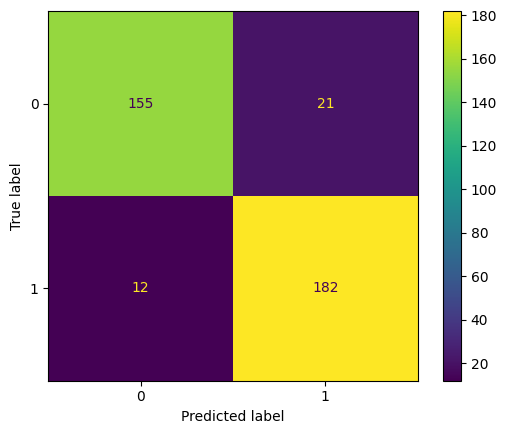
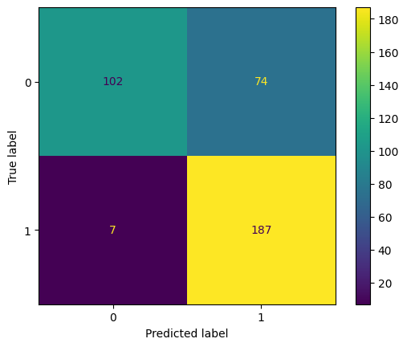
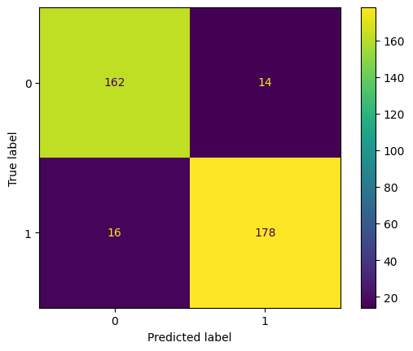
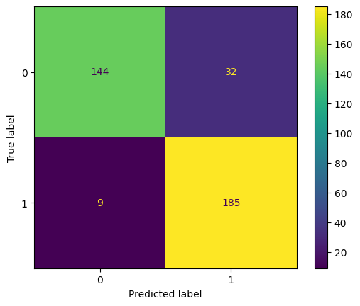

SVM’s purpose in this project is similar to decision trees’ purpose, predicting whether or not a song would a user’s playlist (mine in this case). However, the difference between both models is in the input variables where I previously used audio features for the decision tree and random forest models whereas in this case, I used text data and the form of song lyrics to predict whether a song would make it to the playlist (i.e be recommended) or not. Essentially, the goal of this problem was to understand whether lyrics of songs have any predictive ability when it comes to predicting whether a user would like a certain song.
Additional data collection/cleaning
Similar to what was done in the Decision Tree section, additional playlists were gathered and joined with my playlist to have a final data set with a good mix of 1s and 0s, which represent in playlist and not in playlist respectively. Next a Python script was developed to gather the lyrics of all newly added songs since lyrics is the only input variable the model was to build on. Finally, since the input variable is text data count vectorizer (previously used and defined in the Data Cleaning tab) was used to transform the data into the appropriate format for modeling.
Code
import pandas as pdimport seaborn as sns import matplotlib.pyplot as pltfrom sklearn import treefrom IPython.display import Imageimport numpy as npfrom sklearn.metrics import accuracy_scorefrom sklearn.metrics import precision_scorefrom sklearn.metrics import recall_score
Code
from PyPDF2 import PdfMergerpdfs = ['/Users/anthonymoubarak/Desktop/Quiz 4-anly511.pdf', '/Users/anthonymoubarak/Desktop/Quiz4-Problem3-AnthonyMoubarak.pdf']merger = PdfMerger()for pdf in pdfs: merger.append(pdf)merger.write("/Users/anthonymoubarak/Desktop/Quiz.pdf")merger.close()
Code
# Import the data of all playlists and their lyrics (gathered using the Lyric_scrapper.ipynb notebook)df = pd.read_csv('/Users/anthonymoubarak/Desktop/anly-501-project-anthonymoub/501-project-website/Data/all_playlists_with_lyrics.csv')
Code
# Clean the lyrics of songs (remove stop words, etc.)import nltkfrom nltk.corpus import stopwordsnltk.download('stopwords')sw_nltk = stopwords.words('english')for i inrange(len(df)):try: query = df['lyrics'][i].replace("\n" , " ") querywords = query.split() resultwords = [word for word in querywords if word.lower() notin sw_nltk] result =' '.join(resultwords) df['lyrics'][i] = resultexcept:continue
[nltk_data] Downloading package stopwords to
[nltk_data] /Users/anthonymoubarak/nltk_data...
[nltk_data] Package stopwords is already up-to-date!
/var/folders/r_/fklxc5m54kl125_d3kkyjzp40000gn/T/ipykernel_22944/2946909150.py:23: SettingWithCopyWarning:
A value is trying to be set on a copy of a slice from a DataFrame
See the caveats in the documentation: https://pandas.pydata.org/pandas-docs/stable/user_guide/indexing.html#returning-a-view-versus-a-copy
df['lyrics'][i] = result
Code
# Convert lyrics to list of stringscorpus=df["lyrics"].to_list()
Code
# Initialize an index variable that stores all indexes that were removed, so that they end up being removed for the target variable# as welldef get_index_positions(list_of_elems, element):''' Returns the indexes of all occurrences of give element in the list- listOfElements ''' index_pos_list = [] index_pos =0whileTrue:try:# Search for item in list from indexPos to the end of list index_pos = list_of_elems.index(element, index_pos)# Add the index position in list index_pos_list.append(index_pos) index_pos +=1exceptValueErroras e:breakreturn index_pos_listindexes = get_index_positions(corpus , np.nan)# Remove all nans from corpusfor i in np.arange(1 , corpus.count(np.nan) +1): corpus.remove(np.nan)# Initialize our target variable and drop all unwanted indexesy = df['In_playlist'].to_list()def delete_multiple_element(list_object, indices): indices =sorted(indices, reverse=True)for idx in indices:if idx <len(list_object): list_object.pop(idx)delete_multiple_element(y , indexes)
Code
# INITIALIZE COUNT VECTORIZERfrom sklearn.feature_extraction.text import CountVectorizer# minDF = 0.01 means "ignore terms that appear in less than 1% of the documents". vectorizer=CountVectorizer(min_df=0.0001) # RUN COUNT VECTORIZER ON OUR COURPUS Xs = vectorizer.fit_transform(corpus) X=np.array(Xs.todense())#CONVERT TO ONE-HOT VECTORSmaxs=np.max(X,axis=0)X=np.ceil(X/maxs)
Code
# Normalize data to speed up the fitting processX = (X-X.mean())/X.std()
SVM modelling
As discussed in the start of this section where SVM was defined and introduced, most data sets do not have linear relationships between data points which is why fitting a linear hyperplane would not always be the best-case fit for the problem. For this reason, there are multiple so-called kernels for SVM which are used in these cases where the most popular are RBF, polynomial, and sigmoid. To properly understand which one best fits my data I fit it all these four models using Python’s sklearn package and compared their training and testing accuracies.
Linear SVM
Code
# Split data intro training and testingfrom sklearn.model_selection import train_test_splittest_ratio=0.2x_train, x_test, y_train, y_test = train_test_split(X, y, test_size=test_ratio, random_state=0)
Code
# Start by using a linear SVM classifier# Set the classifier to be linear and C between 0.35-0.75. from sklearn.svm import SVCfrom sklearn.metrics import classification_report, confusion_matrixfrom sklearn import svm#Create a svm Classifierclf = svm.SVC(kernel='linear', C =0.5)#Train the model using the training setsclf.fit(x_train, y_train)
SVC(C=0.5, kernel='linear')
In a Jupyter environment, please rerun this cell to show the HTML representation or trust the notebook. On GitHub, the HTML representation is unable to render, please try loading this page with nbviewer.org.
SVC(C=0.5, kernel='linear')
Code
#Predict the response for test datasety_pred_linear = clf.predict(x_test)
Code
#Run the classifier on training data y_pred_linear_train = clf.predict(x_train)
Code
# Get the testing accuracy sum(y_pred_linear == y_test)/len(y_test)
0.9108108108108108
Code
# Get the training accuracy sum(y_pred_linear_train == y_train)/len(y_train)
0.9966216216216216
Code
# Calculate the confusion matrix and classification report for the train and test data. report = classification_report(y_test , y_pred_linear , output_dict=True)# Save the results in a data frame. report_df = pd.DataFrame(report).transpose()# display the results data framereport_df
precision
recall
f1-score
support
0
0.928144
0.880682
0.903790
176.000000
1
0.896552
0.938144
0.916877
194.000000
accuracy
0.910811
0.910811
0.910811
0.910811
macro avg
0.912348
0.909413
0.910333
370.000000
weighted avg
0.911579
0.910811
0.910652
370.000000
Code
# Display Confusion Matrix for the test data. Remember to use the ConfusionMatrixDisplay function.from sklearn.metrics import confusion_matrix, ConfusionMatrixDisplaycm = confusion_matrix(y_test , y_pred_linear, labels=clf.classes_)disp = ConfusionMatrixDisplay(confusion_matrix=cm, display_labels=clf.classes_)disp.plot()plt.show()

Polynomial SVM
Code
# Repeat the same process but for polynomial kernels model_poly = svm.SVC(kernel='poly', C =0.6 , degree =2)#Train the model using the training setsmodel_poly.fit(x_train, y_train)#Predict the response for test datasety_pred_poly = model_poly.predict(x_test)
# Calculate the confusion matrix and classification report for the train and test data. report_poly = classification_report(y_test , y_pred_poly , output_dict=True)
Code
# Save the results in a data frame.report_df_poly = pd.DataFrame(report_poly).transpose()
Code
# display the results data framereport_df_poly
precision
recall
f1-score
support
0
0.935780
0.579545
0.715789
176.000000
1
0.716475
0.963918
0.821978
194.000000
accuracy
0.781081
0.781081
0.781081
0.781081
macro avg
0.826127
0.771731
0.768884
370.000000
weighted avg
0.820793
0.781081
0.771467
370.000000
Code
# Display Confusion Matrix for the test data. Remember to use the ConfusionMatrixDisplay function.cm = confusion_matrix(y_test , y_pred_poly, labels=clf.classes_)disp = ConfusionMatrixDisplay(confusion_matrix=cm, display_labels=clf.classes_)disp.plot()plt.show()

RBF kernel SVM
Code
# Import svc from sklearn.svm and classsification_report, confusion_matrix from sklearn.metrics.# Fit the classfier on the training data and predict on the test data. Set the classifier to be linear and C between 0.35-0.75. model_rbf = svm.SVC(kernel='rbf', C =0.6)#Train the model using the training setsmodel_rbf.fit(x_train, y_train)#Predict the response for test datasety_pred_rbf = model_rbf.predict(x_test)
# Training accuracy sum(y_pred_rbf_train == y_train)/len(y_train)
0.9527027027027027
Code
# Calculate the confusion matrix and classification report for the train and test data. report_rbf = classification_report(y_test , y_pred_rbf , output_dict=True)# Save the results in a data frame and display it.report_df_rbf = pd.DataFrame(report_rbf).transpose()report_df_rbf
precision
recall
f1-score
support
0
0.910112
0.920455
0.915254
176.000000
1
0.927083
0.917526
0.922280
194.000000
accuracy
0.918919
0.918919
0.918919
0.918919
macro avg
0.918598
0.918990
0.918767
370.000000
weighted avg
0.919011
0.918919
0.918938
370.000000
Code
# Display Confusion Matrix for the test data. Remember to use the ConfusionMatrixDisplay function.cm2 = confusion_matrix(y_test , y_pred_rbf, labels=clf.classes_)disp = ConfusionMatrixDisplay(confusion_matrix=cm2, display_labels=clf.classes_)disp.plot()plt.show()

Sigmoid SVM
Code
# Import svc from sklearn.svm and classsification_report, confusion_matrix from sklearn.metrics.# Fit the classfier on the training data and predict on the test data. Set the classifier to be linear and C between 0.35-0.75. model_sig = svm.SVC(kernel='sigmoid', C =0.6)#Train the model using the training setsmodel_sig.fit(x_train, y_train)#Predict the response for test datasety_pred_sig = model_sig.predict(x_test)
# Training accuracysum(y_pred_sig_train == y_train)/len(y_train)
0.9101351351351351
Code
# Calculate the confusion matrix and classification report for the train and test data. report_sig = classification_report(y_test , y_pred_sig , output_dict=True)report_df_sig = pd.DataFrame(report_sig).transpose()report_df_sig
precision
recall
f1-score
support
0
0.941176
0.818182
0.875380
176.000000
1
0.852535
0.953608
0.900243
194.000000
accuracy
0.889189
0.889189
0.889189
0.889189
macro avg
0.896856
0.885895
0.887812
370.000000
weighted avg
0.894699
0.889189
0.888416
370.000000
Code
# Display Confusion Matrix for the test data. Remember to use the ConfusionMatrixDisplay function.cm3 = confusion_matrix(y_test , y_pred_sig, labels=clf.classes_)disp = ConfusionMatrixDisplay(confusion_matrix=cm3, display_labels=clf.classes_)disp.plot()plt.show()

Baseline classifier
Code
# The baseline model is a random classifier that will be compared to all the developed models import randomdf['predictions'] =''classes = [0 , 1]for i inrange(len(df)): df['predictions'][i] = random.choice(classes)
/var/folders/r_/fklxc5m54kl125_d3kkyjzp40000gn/T/ipykernel_22944/4045556032.py:8: SettingWithCopyWarning:
A value is trying to be set on a copy of a slice from a DataFrame
See the caveats in the documentation: https://pandas.pydata.org/pandas-docs/stable/user_guide/indexing.html#returning-a-view-versus-a-copy
df['predictions'][i] = random.choice(classes)
In terms of accuracy almost all kernels perform better than the baseline model (which has an accuracy of 50%). Specifically, the RBF and linear kernels perform the best in terms of accuracy (90+% testing accuracy) but the gap between training and testing accuracy is lower for RBF kernel which indicates a lesser tendency to overfit. For this reason, I decided to choose the RBF kernel as the SVM model I want to optimize and use for classification.
Model selection and tuning
As discussed in the preceding section, the RBF kernel gave the best SVM model for my project, which is why decided to use it as the model to further optimize. Optimizing SVM models usually means taking multiple kernels along with multiple hyperparameter values and seeing how the accuracies change for each possible combination. For this case I decided to stick to one kernel (RBF) and try multiple C values between 0.1 and 10.
The optimization was done using Python’s GridSearch package, which fits the different options and returns the final “best” fit.In my case the best fit turned out to be for a C value equal to 10, which I later used to rebuild a new model that will act as my final SVM model.
The optimization was done using Python’s GridSearch package, which fits the different options and returns the final “best” fit.In my case the best fit turned out to be for a C value equal to 10, which I later used to rebuild a new model that will act as my final SVM model.
Fitting 5 folds for each of 4 candidates, totalling 20 fits
[CV] END ..................................C=0.1, kernel=rbf; total time= 1.1min
[CV] END ..................................C=0.1, kernel=rbf; total time= 1.0min
[CV] END ..................................C=0.1, kernel=rbf; total time= 1.0min
[CV] END ..................................C=0.1, kernel=rbf; total time= 1.1min
[CV] END ..................................C=0.1, kernel=rbf; total time= 59.7s
[CV] END ....................................C=1, kernel=rbf; total time= 42.4s
[CV] END ....................................C=1, kernel=rbf; total time= 42.0s
[CV] END ....................................C=1, kernel=rbf; total time= 41.9s
[CV] END ....................................C=1, kernel=rbf; total time= 43.4s
[CV] END ....................................C=1, kernel=rbf; total time= 41.2s
[CV] END ...................................C=10, kernel=rbf; total time= 39.6s
[CV] END ...................................C=10, kernel=rbf; total time= 55.4s
[CV] END ...................................C=10, kernel=rbf; total time= 39.6s
[CV] END ...................................C=10, kernel=rbf; total time= 55.6s
[CV] END ...................................C=10, kernel=rbf; total time= 54.5s
[CV] END ..................................C=100, kernel=rbf; total time= 57.4s
[CV] END ..................................C=100, kernel=rbf; total time= 56.9s
[CV] END ..................................C=100, kernel=rbf; total time= 56.0s
[CV] END ..................................C=100, kernel=rbf; total time= 55.3s
[CV] END ..................................C=100, kernel=rbf; total time= 53.9s
In a Jupyter environment, please rerun this cell to show the HTML representation or trust the notebook. On GitHub, the HTML representation is unable to render, please try loading this page with nbviewer.org.
Running the final SVM model gave the best accuracy so far of 92% which does make sense considering optimization mainly focuses on improving a pre-built model. The final model’s confusion matrix can be seen below:
The confusion matrix shows that for the most part the model perfectly predicts the true positives and true negatives for this problem.
Conclusion
All in all, SVM classification using text and lyrics data of songs proved to be a good method to predict whether a song would make a certain a user’s playlist, which shows the predictive ability that lyrics of songs have. From a social perspective this indicates that most people’s music tastes could be easily differentiated by the lyrics of songs they listen to. Whether or not SVM is superior to decision trees (which was used previously) for this project is yet to be seen and could be properly understood once both of them are used in a production environment